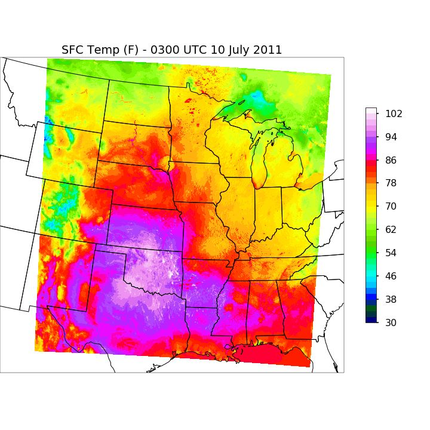

Purpose
This page is to facilitate running WRF on NIU's GAEA cluster. It is intended for users in the Department of Geography who belong to the spatialcogvis group.
These instructions are adapted from Dr. Victor Gensini's WRF tutorial document
.
A big thanks to Dr. Kirk Duffin of the Computer Science department at NIU for setting up WRF and helping us to get started on this project.
Data
This example will use NARR data from 00 UTC on 10 July 2011 to 18 UTC on 11 July 2011 to simulate the progression of a severe Mesoscale Convective System.
Logging on to GAEA
Logging on to GAEA requires establishing an ssh connection to gaea.niu.edu.
Windows Users:
| 1) Download PuTTY |
| 2) Open PuTTY and type gaea.niu.edu into the Host Name input field |
| 2) Input username and password (GAEA specific, talk to Alex for more info) |
Linux Users:
| 1) Open a terminal |
| 2) Type ssh username@gaea.niu.edu |
| 3) Input username and password (GAEA specific, talk to Alex for more info) |
Getting NARR Data
Data source is the National Centers for Environmental Information
Create Directory for WRF and data using the following UNIX commands:
|
| 1) cd /data1/spatialcogvis |
| 2) mkdir username (this is whatever your username, project, etc., is) |
| 3) cd username |
| 4) mkdir narr |
Download NARR data into the narr folder:
| 1) cd narr |
| 2) use wget to download the following files: |
| wget http://nomads.ncdc.noaa.gov/data/narr/201107/20110710/narra_221_20110710_0000_000.grb |
| wget http://nomads.ncdc.noaa.gov/data/narr/201107/20110710/narra_221_20110710_0300_000.grb |
| wget http://nomads.ncdc.noaa.gov/data/narr/201107/20110710/narra_221_20110710_0600_000.grb |
| wget http://nomads.ncdc.noaa.gov/data/narr/201107/20110710/narra_221_20110710_0900_000.grb |
| wget http://nomads.ncdc.noaa.gov/data/narr/201107/20110710/narra_221_20110710_1200_000.grb |
| wget http://nomads.ncdc.noaa.gov/data/narr/201107/20110710/narra_221_20110710_1500_000.grb |
| wget http://nomads.ncdc.noaa.gov/data/narr/201107/20110710/narra_221_20110710_1800_000.grb |
| wget http://nomads.ncdc.noaa.gov/data/narr/201107/20110710/narra_221_20110710_2100_000.grb |
| wget http://nomads.ncdc.noaa.gov/data/narr/201107/20110711/narra_221_20110711_0000_000.grb |
| wget http://nomads.ncdc.noaa.gov/data/narr/201107/20110711/narra_221_20110711_0300_000.grb |
| wget http://nomads.ncdc.noaa.gov/data/narr/201107/20110711/narra_221_20110711_0600_000.grb |
| wget http://nomads.ncdc.noaa.gov/data/narr/201107/20110711/narra_221_20110711_0900_000.grb |
| wget http://nomads.ncdc.noaa.gov/data/narr/201107/20110711/narra_221_20110711_1200_000.grb |
| wget http://nomads.ncdc.noaa.gov/data/narr/201107/20110711/narra_221_20110711_1500_000.grb |
| wget http://nomads.ncdc.noaa.gov/data/narr/201107/20110711/narra_221_20110711_1800_000.grb |
Defining Simulation Parameters
Two files are required to define things like the spatial domain of the simulation, where output data are stored, and where the processes can find pertinent data and configuration files.
Place the follwing files in your WRF directory (e.g., /data1/spatialcogvis/username). Feel free to reduce the size of the domain if you wish to run a faster simulation.
These files define several parameters, such as the range of the simulation, the spatial domain, and the spatial and temporal resolution.
For this case, the domain will encompass the following shaded areas with 4x4 km spatial and 3 hourly temporal output:

Preparing for the Simulation
Some files need to be "linked" or moved using the following UNIX commands:
|
| 1) cd /data1/spatialcogvis/username (change directory to the folder in which you wish to run WRF) |
| 2) ln -sf /data1/local/stow/WPS-3.8.1/Variable_Tables/Vtable.NARR Vtable (link NARR table and name it Vtable) |
| 3) mkdir shared_tables |
| 4) cp /data1/spatialcogvis/WRF/shared_tables/* /data1/spatialcogvis/username/shared_tables (copy geogrid and metgrid tables to your directory) |
| 5) mkdir my_output (create a directory for pre-processing files) |
| 6) ln -sf /data1/local/stow/WPS-3.8.1/bin/link_grib.csh . (link a utility file to your directory that is used during the pre-processing steps) |
| 7) ln -sf /data1/local/stow/WRF-3.8.1/run/* . (link files used to run WRF simulations. You will need to replace your own namelist.input since this will overwrite it.)
|
Running Pre-Processing Tasks
Before WRF can be run, four processes need to be executed:
|
| GEOGRID |
| 1) Copy the following job file to your home directory (cd ~): geogrid.job
|
| 2) Submit the job to the cluster queue using the command: qsub geogrid.job |
| When this is complete, you should see a file named "geo_em.d01.nc" or similar in your my_output folder. |
| UNGRIB (**for some reason, ungrib.job does not work. Skip steps 2a and 3a for now) |
|
| 1) Link narr grib files to WRF directory using command: link_grib.csh /data1/spatialcogvis/username/narr/*.grb
|
|
| If this succeeded, you should see files like "GRIBFILE.AAA, GRIBFILE.AAB, etc." in your WRF directory.
|
|
| 2a) Copy the following job file to your home directory (cd ~): ungrib.job** |
|
| 3a) Submit the job to the cluster queue using the command: qsub ungrib.job** |
|
| 2b) Manual UNGRIB is performed by running the following commands in your WRF directory: |
|
| module add wrf/wrf-3.8.1 |
| ungrib.exe |
|
|
| It is possible that this will fail if all of the nodes are in use. Working on getting the ungrib.job to function correctly... |
|
| When this is complete, you should see files like "FILE:2011-07-11_18, FILE:2011-07-11_15, etc." in your WRF directory. |
| METGRID |
|
| 1) Copy the following job file to your home directory (cd ~): metgrid.job |
| 2) Submit the job to the cluster queue using the command: qsub ungrib.job |
| When this is complete, you should see files like "met_em.d01.2011-07-11_18:00:00.nc" in your my_output directory. |
| REAL |
|
| 1) Link the met_em files to your WRF directory using this command: ln -sf /data1/spatialcogvis/username/my_output/met_em.d* .
|
| 2) Copy the following job file to your home directory (cd ~): real.job |
| 3) Submit the job to the cluster queue using the command: qsub real.job |
| When this is complete, you should see two files "wrfbdy_d01" and "wrfinput_d01" in your WRF directory. |
Running WRF
At this point, it is pretty straightforward!
| 1) Copy the following job file to your home directory (cd ~): run_wrf.job |
| The provided settings ask for an allocation of 5 nodes with 8 processors per node, for a total of 40 processors. |
| You can check to see if your process is still running by using this command: qstat |
| As this process is running, you will see large netCDF files like "wrfout_d01_2011-07-10_18:00:00.nc" populating your WRF directory.
|
Post-Processing (TBD)
Updated 6/29/2017